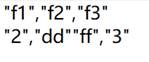

Description:
Get a cursor based on a pseudo table object.
Syntax:
T.cursor(xi:Ci,…)
Note:
The function gets a cursor based on pseudo table T by specifying field expressions xi and field names Ci, which, by default, field names in the pseudo table. It gets a cursor using all fields of the pseudo table when paramters xi:Ci are absent.
Only supported by esProc Enterprise Edition.
Parameter:
|
T |
A pseudo table. |
|
xi |
A field expression. |
|
Ci |
Field name in a result table sequence. |
Return value:
Cursor
Example:
|
|
A |
|
|
1 |
=create(file).record(["D:/file/pseudo/empT.ctx"]) |
|
|
2 |
=pseudo(A1) |
Generate a pseudo table object. |
|
3 |
=A2.cursor() |
Generate a cursor from A2’s pseudo table using all its fields, since no parameters are present. |
|
4 |
=A3.fetch() |
Below is data in A3’s cursor:  |
|
5 |
=A2.cursor(EID:eid,NAME,SALARY:salary) |
Retrieve fields EID, NAME and SALARY from the pseudo table to generate a cursor with new field names eid, NAME and salary respectively. |
|
6 |
=A5.fetch() |
Below is data in A5’s cursor:
|
Description:
Merge subcursors in a multicursor into a unicursor or a new multicursor with a smaller number of parallel subcursors.
Syntax:
mcs.cursor(n)
Note:
The function merges subcursors in a multicursor into a unicursor, which is the default, or a new multicursor with a smaller number, which is specified by parameter n, of parallel subcursors.
Parameter:
|
mcs |
A multicursor. |
|
n |
Subcursor column name. |
Return value:
Cursor/Multicursor
Example:
|
|
A |
|
|
1 |
=demo.query("select * from EMPLOYEE").cursor@m(5) |
Return a multicursor having 5 subcursors. |
|
2 |
=A1.cursor(3) |
Merge subcursors in the multicursor and convert it to a 3-subcursor multicursor. |
|
3 |
=A2.cursor() |
Convert a multicursor to a unicursor. |